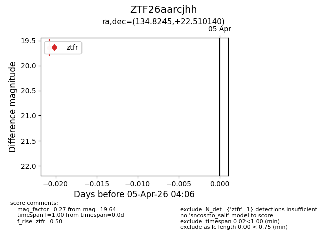
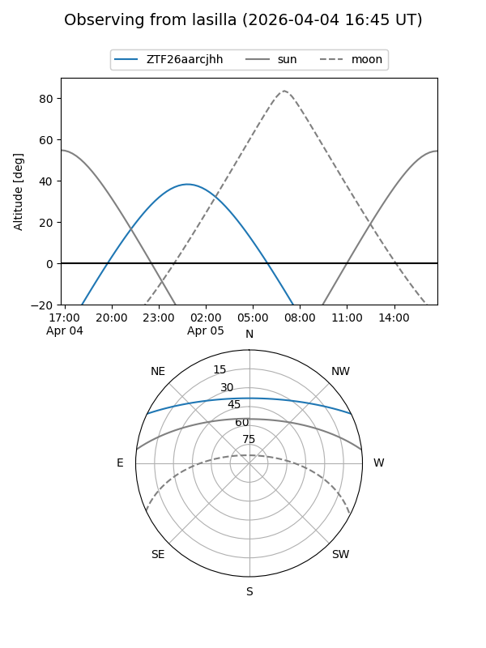
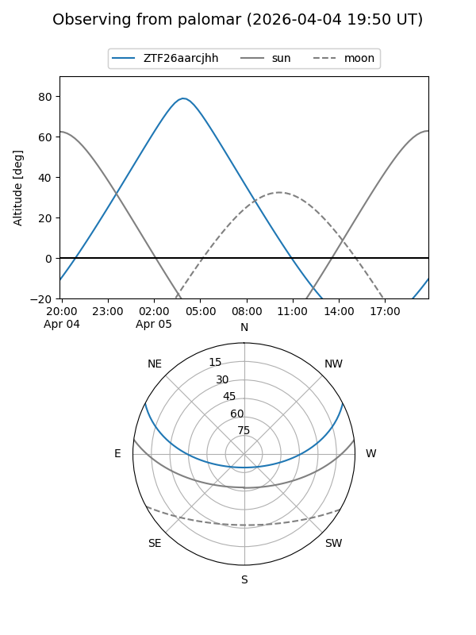

ZTF26aarcjhh
Target ZTF26aarcjhh at 2026-04-05 04:09
Aliases and brokers:
FINK: link
Lasair: link
ALeRCE: link
alt names
ZTF26aarcjhh (ztf,fink_ztf)
Coordinates:
equatorial (ra, dec) = 134.8245,+22.51014
equatorial (HMS+DMS) = 08:59:17.89,+22:30:36.50
galactic (l, b) = (204.3896,+37.57767)
Flags:
Photometry:
last ztfr=19.64
1 ztfr detections
Lightcurve

Visibility


Additional plots